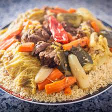

t3am miss thamourth

INGREDIENTS
couscous yabki li ma3andouch nthadarth
- 1 tablespoon olive oil
- 1 red onion
- 1 carrot
- 1 table spoon salt
- 1 la biere
steps
- Heat oil in large pot over medium-low heat. Place onion, zucchini, yellow squash, and carrot in pot and cook, stirring occasionally, until onions begin to soften and turn translucent, about 5 minutes. Stir in the red and yellow peppers and mushrooms; cook another 3 minutes. Vegetables should still be firm.
- Pour in the vegetable stock and season with paprika, cardamom, salt, and cilantro. Bring mixture to a boil; reduce heat to low. Stir in chickpeas and tomatoes. Slowly pour in the couscous; stir. Cover pot immediately and remove from the heat. Let stand, covered, for 5 minutes. Fluff couscous with a fork. The couscous should have absorbed about half the cooking liquid.
- Serve at slightly warmer than room temperature. Garnish with orange zest and the grated cheese, paprika, and almonds.